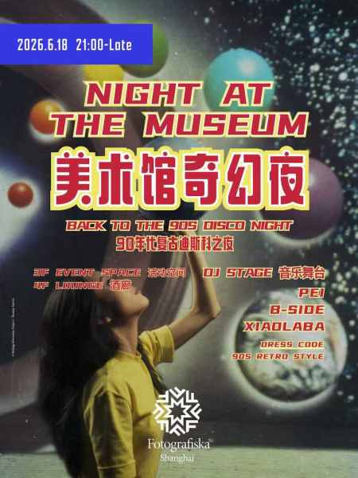

watch / Watch
Night at the Museum: Back to the 90s Disco Night
Fotografiska's 90s-themed late-night disco event uses multi-floor DJ sets and museum space. SmartShanghai and 247tickets both confirm the Jun 18, 21:00, 120 RMB e-ticket listing; keep as Watch because individual DJ names are still unpublished and the sound is date-route disco rather than a high-fit techno night.

DateJun 18
Time21:00-late
VenueFotografiska
DistrictJing'an
Sounddisco, retro club, DJ sets
Price120 RMB including ticket and 1 drink
Age / IDNot listed
Source layerwatchlist
Intensitysoft
Credibilityunconfirmed
Event Tags
Simple tags for sound, room context, ticket/source status, and details that still need a source check.
How We Recommend This
- RecommendationKept on Watch because SmartShanghai gives a useful lead, but key practical details still need a stronger second source before promotion.
- Best forBest for a more social, house-forward, or date-friendly electronic music route.
- Verify before goingConfirm the latest event page, ticket availability, lineup, start time, and venue address before making plans.
- Source confidenceWatch-level confidence from SmartShanghai; keep visible but verify with direct venue, promoter, ticketing, RA, or official artist evidence.
Lineup and Notes
Lineup details are limited in public sources. Use the source link before planning around a specific DJ.
Source Trail
- SmartShanghai watchlist / checked 2026-06-14 2026-06-14 SmartShanghai page check confirmed Jun 18, 9pm-late, 120 RMB including one drink, Fotografiska address, and Web/App/WeChat ticket routes.
- 247tickets ticketing / checked 2026-06-14 2026-06-14 247tickets page check confirmed Fotografiska Shanghai, 127 Guangfu Road, Jun 18 2026, Thu 9:00 PM, 120 RMB regular e-ticket including one drink, and no cancellation notice.
This lead is intentionally noindexed until a direct venue, promoter, ticketing, RA, SmartShanghai detail, or official artist source confirms the details.
Trust Ledger
- Last checked2026-06-14
- Selection basisWatchlist lead kept visible for source monitoring; do not treat date, lineup, or ticketing as final until stronger evidence lands.
- Commercial relationshipNo paid placement recorded.
- Correction routeSend source fixes through RED 980793145 or the corrections policy.
- PolicyHow We Recommend / Corrections